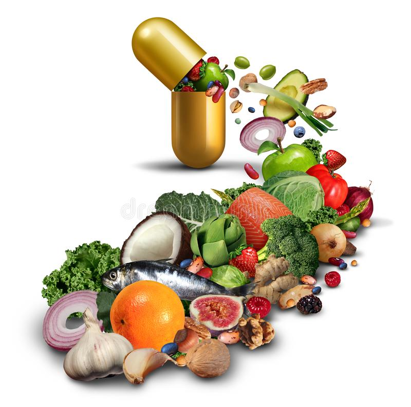

We've heard a lot of encouraging news about supplements. A series of studies hailed vitamin D as a possible defense against a long list of diseases, including cancer, diabetes, depression, and even the common cold. Omega-3 fatty acids have been touted for warding off strokes and other cardiovascular events. And antioxidants such as vitamins C and E and beta carotene were seen as promising silver bullets against heart disease, cancer, and even Alzheimer's disease. Here's the big caveat: many of those exciting supplement studies were observational—they didn't test a particular supplement against a placebo (inactive pill) in a controlled setting. The results of more stringent randomized controlled trials haven't yielded the same good news. "Often the enthusiasm for these vitamins and supplements outpaces the evidence. And when the rigorous evidence is available from randomized controlled trials, often the results are at odds with the findings of the observational studies," explains Dr. JoAnn Manson, chief of preventive medicine at Brigham and Women's Hospital, professor of medicine at Harvard Medical School, and principal investigator of a large randomized trial known as VITAL (Vitamin D and Omega-3 Trial). Because observational studies may not fully control for dietary factors, exercise habits, and other variables, they can't prove whether the treatment is responsible for the health benefits. "People who take supplements tend to be more health conscious, exercise more, eat healthier diets, and have a whole host of lifestyle factors that can be difficult to control for fully in the statistical models," Dr. Manson says. Some supplements that were found to have health benefits in observational studies turned out, with more rigorous testing, to be not only ineffective but also risky. Vitamin E, which was initially thought to protect the heart, was later discovered to increase the risk for bleeding strokes. Folic acid and other B vitamins were once believed to prevent heart disease and strokes—until later studies not only didn't confirm that benefit but actually raised concerns that high doses of these nutrients might increase cancer risk.
We need a variety of nutrients each day to stay healthy, including calcium and vitamin D to protect our bones, folic acid to produce and maintain new cells, and vitamin A to preserve a healthy immune system and vision. Yet the source of these nutrients is important. "Usually it is best to try to get these vitamins and minerals and nutrients from food as opposed to supplements," Dr. Manson says. Fruits, vegetables, fish, and other healthy foods contain nutrients and other substances not found in a pill, which work together to keep us healthy. We can't get the same synergistic effect from a supplement. Taking certain vitamins or minerals in higher-than-recommended doses may even interfere with nutrient absorption or cause side effects
The average American diet leaves a lot to be desired. Research finds our plates lacking in a number of essential nutrients, including calcium, potassium, magnesium, and vitamins A, C, and D. It's no wonder that more than half of us open a supplement bottle to get the nutrition we need. Many of us take supplements not just to make up for what we're missing, but also because we hope to give ourselves an extra health boost—a preventive buffer to ward off disease. Getting our nutrients straight from a pill sounds easy, but supplements don't necessarily deliver on the promise of better health. Some can even be dangerous, especially when taken in larger-than-recommended amounts.
| Calcium | 1,000–1,200 mg | 2,000 mg |
| Folate | 400 mcg | 1,000 mcg |
| Iron | 8 mg | 45 mg |
| Vitamin A | 700 mcg RAE | 3,000 mcg RAE |
| Vitamin B | 1.5 mg | 100 mg |
| Vitamin C | 75 mg | 2,000 mg |
| Vitamin D | 600–800 IU | 4,000 IU |
| Chaga | 500mg | 1200mg |
| Maca | 1000mg | 2500mg |
Best source of vitamin C
Best source of vitamin B